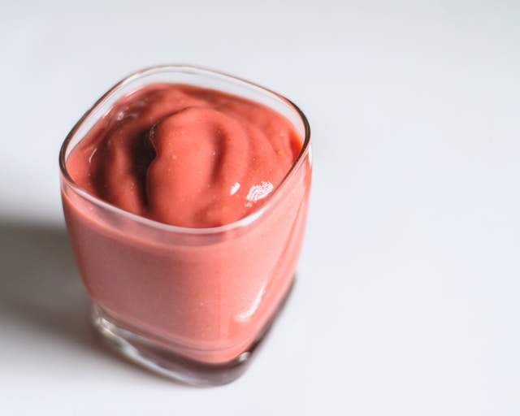

SuperMercado Verde
Volver a las recetas
Productos
Ofertas
Contacto
Batido de fresa
Suave y refrescante, una combinación perfecta de sabores naturales para deleitar los sentidos

Ingredientes
150g de fresas
120ml de leche
120g de yogur natural
15g de miel o azúcar (opcional)
70g de hielo
Instrucciones
Paso 1: Lava bien las fresas
Paso 2: Pon las fresas, la leche, el yogur y la miel (si usas) en una licuadora
Paso 3: Agrega el hielo
Paso 4: Licuar a alta velocidad hasta que la mezcla se haga suave y cremosa
Paso 5: Servir y adornar
Comentarios y valoraciones
Enviar
Alfonso:
Con tan pocos ingredientes, se hizo muy fácil hacer esta deliciosa receta
Pedro:
La adorné con chocolate y nubecillas y está de muerte